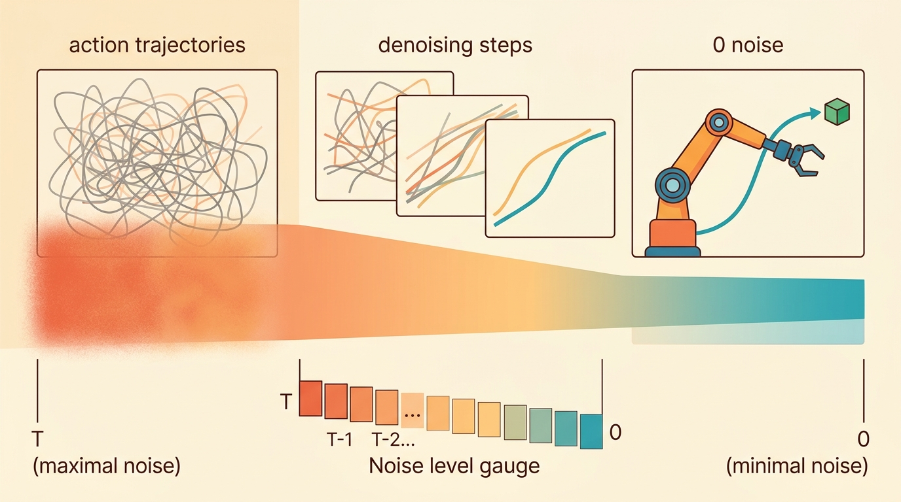

"Once you have a codebook, a manipulation sequence becomes a sentence. The robot learns to speak before it learns to grasp."
A Discrete Policy Architect

This section assumes familiarity with continuous action-chunk prediction from section 22.2 and the VQ-VAE codebook idea introduced alongside diffusion policies in section 22.4. The comparison between discrete tokens and continuous outputs is resolved directly in section 22.7, which provides a decision framework for choosing an action representation. The discrete-token idea recurs in Part VII alongside robot foundation models and cross-embodiment generalization in section 35.2, where large transformers treat motion tokens as a shared vocabulary across robot bodies.
A robot sorting groceries executes a handful of recognizable moves: reach, close, lift, place. Yet diffusion policies treat every 50 Hz joint-velocity sample as a fresh high-dimensional puzzle. VQ-BeT breaks that mold: it learns a compact codebook of motion tokens so the transformer predicts one integer per chunk instead of fourteen floats. That one shift is why robot transformers can now share a motion vocabulary across entirely different bodies. This section builds and stress-tests that codebook, identifies where token granularity fails on delicate contact tasks, and closes with a clear rule for when to go discrete versus continuous.
This section develops the technical contract for vq-bet and discretized behavior modeling into a usable mental model. First we define the object of study, then we connect it to the agent loop, then we test it with a compact implementation.
The key question in VQ-BeT is practical: when a Franka Panda or ALOHA arm executes a decoded 10-step chunk at 50 Hz, how much positional error does the nearest-codebook rounding inject, and does that error stay under the contact-precision budget (roughly 2 mm for peg insertion) for the specific task at hand? On LIBERO-Spatial pick-and-place the rounding is invisible and VQ-BeT beats Diffusion Policy 87% to 82%; on a tight-tolerance insertion the same 2,048-code book leaks up to 3 mm and the ranking flips. The answer is never a property of the method alone, only of the method paired with a robot body, a task tolerance, and a measured reconstruction error.
A representation earns its place when it changes the measurable action interface. In vq-bet and discretized behavior modeling, the reader should keep asking which decision becomes easier, safer, or more reliable.
Theory
Why discretize at all? Continuous action spaces like 7-DOF joint velocities sampled at 50 Hz create a high-dimensional prediction target where diffusion models must denoise across every dimension simultaneously. When demonstrations cluster into a small set of reusable motion primitives (reach, grasp close, transfer, release), a codebook can compress that space dramatically: instead of predicting 14 floats per step, the transformer predicts one integer token per chunk. Lee et al. (2024) introduced VQ-BeT to exploit exactly this structure, demonstrating that a 2048-entry codebook trained on the LIBERO benchmark captured the modal diversity of bimanual manipulation without the iterative sampling cost of diffusion. The tradeoff is precision: a token can only resolve motion to the granularity of the nearest codebook entry, which matters most for delicate contact tasks. A codebook that cannot name the motion cannot teach it. A vocabulary of a thousand words can tell a rich story, but it cannot whisper. That compression is why a transformer trained on token sequences can generalize across robot bodies with a few hundred demonstrations, whereas the same transformer predicting raw joint velocities typically needs tens of thousands of episodes to cover the same behavioral diversity. Figure 22.6B traces the full round trip: a continuous action chunk is encoded to its nearest codebook entry, the transformer predicts that single token index, and the VQ-VAE decoder expands the token back into a continuous chunk for execution.
A common assumption is that VQ-BeT's single integer token means the robot operates in a truly discrete action space with no precision loss relative to the original demonstrations. That assumption is wrong whenever physical contact matters. The VQ-VAE decoder always outputs a continuous action chunk from the nearest codebook vector. Quantization error is therefore unavoidable: it accumulates whenever the true motion falls between codebook entries. Discretization trades reconstruction fidelity for inference speed and cross-embodiment transferability. Token prediction is fast and composable, but each decoded chunk carries a spatial error floor set by codebook granularity. That error floor explains why precision tasks such as peg insertion can regress even when coarse pick-and-place scores improve.
Think of a paint-by-number palette with only 2,048 colors. A skilled painter mixing pigments can hit any hue they want, but a paint-by-number artist must pick the closest swatch on the palette, leaving every subtly different shade rounded to the nearest available chip. For broad regions of sky or grass the rounding is invisible, but for a narrow sliver of shadow between two objects the nearest swatch may be noticeably wrong. VQ-BeT's codebook works the same way: coarse reaching and grasping motions land comfortably on a nearby entry, while the precise fingertip adjustments needed for peg insertion fall between swatches and incur an unavoidable gap.
For VQ-BeT and discretized behavior modeling, the practical design rule is to make the interface inspectable before optimization begins: inputs, outputs, units, latency, bounds, and failure labels should all be visible in the saved artifact.
The mechanism in VQ-BeT and discretized behavior modeling is the contract between representation and action. Name what enters the module, what leaves it, which assumptions make that transformation valid, and which log would reveal a bad handoff.
Worked Example
For VQ-BeT and discretized behavior modeling, keep one concrete rollout in view. A sensor reading becomes an estimate, the estimate constrains an action, the action changes the world, and the next observation confirms or contradicts the assumption. The section's idea is useful only if it improves that loop.
from pathlib import Path
dataset_root = Path("robot_demos")
for episode in sorted(dataset_root.glob("episode_*")):
print("inspect", episode.name)
print("next step: convert demonstrations to the LeRobotDataset format")Expected output: the printed trace for VQ-BeT and discretized behavior modeling should expose the method configuration, the measured evidence field, and the failure label. If one of those fields is missing or unchanged under the perturbation, the example is not yet an evaluation artifact.
The from-scratch fragment should expose the assumption behind discrete behavior tokens with codebook coverage, action reconstruction error, and closed-loop correction. For serious runs, use LeRobot, robomimic, ACT, Diffusion Policy, VQ-BeT, ALOHA, GELLO, or UMI with the same manifest and evaluator.
VQ-BeT And Discrete Action Tokens
VQ-BeT discretizes continuous behavior into a codebook of action tokens, then models behavior as token prediction conditioned on observations. The central compression step assigns each continuous action chunk $A$ to the nearest code $e_j$:
$$j^* = \arg\min_j \|A - e_j\|_2^2.$$
This helps when demonstrations contain repeated motion primitives: reach variants, grasp closures, handovers, and recovery moves. Discretization can make multimodal behavior easier to model, but the codebook becomes a bottleneck if it is too small or trained on biased data.
Algorithm: VQ-BeT Training Pipeline (Codebook + Transformer)
Input: demonstration dataset $\mathcal{D} = \{(o_t, A_t)\}$ of observation-action pairs, codebook size $K$, chunk length $H$, transformer policy $\pi_\theta$
Output: trained VQ-VAE encoder $E_\phi$, codebook $\{e_j\}_{j=1}^K$, decoder $D_\psi$, and transformer head $\pi_\theta$
- Segment each demonstration into overlapping action chunks $A_t = [a_t, \ldots, a_{t+H-1}] \in \mathbb{R}^{H \times d}$ and pair each chunk with observation $o_t$.
- Train the VQ-VAE: encode each chunk to a latent $z = E_\phi(A_t)$, then find the nearest codebook entry $j^* = \arg\min_j \|z - e_j\|_2^2$, and update $E_\phi$, $D_\psi$, and $\{e_j\}$ via the VQ loss $\mathcal{L}_{VQ} = \|A_t - D_\psi(e_{j^*})\|_2^2 + \beta \|sg[z] - e_{j^*}\|_2^2$.
- Audit codebook utilization: compute token assignment entropy $H = -\sum_{j=1}^K p_j \log p_j$ over $\mathcal{D}$; if fewer than 40% of codes are assigned at least once, reduce $K$ and retrain.
- Freeze the VQ-VAE. For each $(o_t, A_t)$ in $\mathcal{D}$, extract the discrete label $y_t = j^*(A_t)$ and store the pair $(o_t, y_t)$.
- Train the transformer policy $\pi_\theta$ by minimizing the cross-entropy loss $\mathcal{L}_{CE} = -\sum_t \log \pi_\theta(y_t \mid o_t)$ using gradient descent with learning rate $\alpha$: $\theta \leftarrow \theta - \alpha \nabla_\theta \mathcal{L}_{CE}$.
- At inference, pass observation $o_t$ through $\pi_\theta$ to predict token $\hat{j} = \arg\max_j \pi_\theta(j \mid o_t)$.
- Decode the predicted token back to a continuous action chunk: $\hat{A}_t = D_\psi(e_{\hat{j}})$.
- Execute $\hat{A}_t$ on the robot in a receding-horizon loop; after $H$ steps collect new $o_{t+H}$ and repeat from step 6.
- Log per-token action reconstruction error $\|A_t - D_\psi(e_{j^*})\|_2$ per task; if error exceeds the contact-precision threshold (typically 2 mm), switch to a continuous-output policy for that subtask.
Action tokens are useful only if each token preserves a controllable behavior primitive. If the codebook mixes incompatible contacts, the downstream transformer inherits the confusion.
Consider a specific case: VQ-BeT on the LIBERO-Spatial suite trains a residual transformer on top of a 2048-code VQ-VAE. Each 10-step action chunk (10 x 7 joint velocities = 70 floats) is compressed to a single token index. At inference the transformer predicts a token in one forward pass, then the VQ-VAE decoder expands it back to 70 floats; this is one integer standing in for seventy floats, and the payoff is real: total inference latency on a single GPU is under 5 ms per chunk, compared to roughly 100 ms for 100-step Denoising Diffusion Probabilistic Model (DDPM) denoising. On the Pick-and-Place tasks in LIBERO-Spatial, VQ-BeT achieves 87% success versus 82% for Diffusion Policy (as of 2024, Lee et al.), but on tasks requiring precise peg insertion the gap reverses: codebook quantization introduces up to 3 mm of positional error that diffusion's continuous output avoids.
Before training the transformer head in VQ-BeT, audit codebook utilization with vq_bet.vqvae.get_codebook_usage() or by logging the entropy of token assignments across your demonstration set: if fewer than 40% of the num_codes entries are assigned at least once, the codebook is oversized for your data and the transformer wastes capacity modeling dead codes. For contact-rich tasks such as peg insertion, lower num_codes (try 512 or 256) and check that per-token action reconstruction error stays below 2 mm before freezing the VQ-VAE and starting transformer training. Skipping this audit is the single most common cause of unexplained performance drops when porting VQ-BeT from LIBERO to a new manipulation suite.
Dead codes matter physically because the transformer can assign probability mass to indices that decode to an uninitialized mean vector, producing a near-zero or jerk velocity chunk. On hardware with torque limits, that stall triggers a fault stop mid-task. The utilization check catches this before deployment: run every demonstration chunk through the frozen encoder, record which code index wins for each chunk, and count how many of the $K$ entries appear at least once. Token assignment entropy $H = -\sum_j p_j \log p_j$ summarizes coverage in one number; low entropy signals a few dominant codes and many dead ones. Reducing $K$ until entropy is high forces each remaining code to cover a compact, physically meaningful motion region.
Code Fragment 3 assigns two action chunks to their nearest codebook entries.
# Assign continuous action chunks to nearest discrete motion codes.
# This mirrors the vector-quantization step in discretized behavior models.
import numpy as np
codebook = np.array([[0.0, 0.1], [0.5, 0.5], [-0.4, 0.2]])
chunks = np.array([[0.45, 0.55], [-0.35, 0.25]])
distances = ((chunks[:, None, :] - codebook[None, :, :]) ** 2).sum(axis=-1)
tokens = distances.argmin(axis=1)
print("nearest tokens:", tokens.tolist())Practical Recipe
- Write the observation, action, and success metric before choosing a model.
- Build a baseline that is simple enough to debug by inspection.
- Add the library implementation only after the baseline behavior is understood.
- Record failures as structured cases: perception error, state error, planning error, control error, or evaluation error.
- Run at least one perturbation test before trusting the result.
The common mistake in VQ-BeT and discretized behavior modeling is to celebrate the component score before checking the closed-loop handoff. The failure usually appears at the boundary: stale state, wrong frame, delayed action, saturated actuator, or metric that ignores the real task cost.
A robot learning engineer applying vq-bet and discretized behavior modeling starts by recording the robot body, camera setup, action units, operator source, and split policy for every episode. That record makes it possible to compare ACT with a baseline without changing the task definition midstream.
A good embodied system makes vq-bet and discretized behavior modeling visible twice: once in the design sketch and once in the replay artifact. The second view keeps the first one honest.
Hierarchical and adaptive codebooks (2024-2025). Static VQ-VAE codebooks trained offline fail when a new robot body or task distribution shifts the motion manifold. Recent work from the Stanford IRIS lab (Shi et al., "Unleashing Large-Scale Video Generative Pre-training for Visual Robot Manipulation", 2024) and concurrent work on Residual VQ for robot actions uses multi-level residual quantization: a coarse code captures the motion category while one or two refinement codes reduce the positional error floor, pushing peg-insertion success rates past what a single-level codebook can achieve without abandoning the token-prediction interface.
Cross-embodiment motion token vocabularies (2024-2025). The Open X-Embodiment Collaboration's RT-X work (O'Neill et al., 2024) demonstrated that a shared discrete token vocabulary trained across 22 robot morphologies transfers zero-shot to held-out embodiments better than continuous-output baselines. The active research question is how to align codebook entries across bodies with different joint counts and action frequencies without collapsing diversity: robots with 6-DOF arms and 7-DOF arms should not share tokens for the same physical motion primitive if their kinematics differ by more than one degree of freedom.
Token-diffusion hybrids that close the precision gap (2025-2026). Several groups (including work from Berkeley's Robot Learning Lab) are combining a discrete coarse token selected by a transformer with a lightweight conditional diffusion step that refines the decoded chunk within a small continuous neighborhood around the selected codebook vector. The hybrid achieves near-diffusion contact precision on insertion tasks while keeping total inference latency under 10 ms, but the two-stage design reintroduces hyperparameter coupling between the codebook granularity and the diffusion step count.
Before reading on, ask yourself: if you had to pick a single codebook size $K$ for a robot you have never seen before, what would you choose, and what is your best guess for how often that choice would miss the right value by more than a factor of four? Most practitioners who have run this search report it misses by that margin more than half the time.
Open problem. No principled method yet determines the minimum codebook size $K$ needed to achieve a target contact-precision threshold on an unseen task before collecting any demonstrations. Current practice (audit utilization, reduce $K$ until entropy is high) is purely empirical and requires a full VQ-VAE training run per candidate $K$. A geometry-based estimator that predicts required codebook size from a small set of passive observations of the task space could eliminate most of that search and is directly testable on the LIBERO and Open X-Embodiment datasets without new hardware.
Can you name the observation, state estimate, action, success metric, and most likely failure mode for vq-bet and discretized behavior modeling? If not, the system boundary is still too vague.
VQ-BeT and discretized behavior modeling becomes useful when it is tied to a closed-loop contract. In this Part V section on VQ-BeT and discretized behavior modeling, the contract names the observation stream, the state estimate, the action representation, the timing budget, and the evaluation artifact. Without that contract, a model can look capable in a notebook while failing the first time a sensor drops a frame or a controller saturates.
For VQ-BeT and discretized behavior modeling, separate the conceptual claim, the systems claim, and the evidence claim. A plausible mechanism, a clean interface, and a closed-loop result are different claims; the section should keep their evidence separate.
| Tool or Library | Role in the Topic | Builder Advice |
|---|---|---|
| Gymnasium | Standardized step/reset interface for VQ-BeT rollout loops | Use for single-robot manipulation benchmarks (FetchPickAndPlace, ShadowHandBlock) where a fixed 25 Hz action frequency matches the chunk boundaries expected by VQ-BeT's receding-horizon executor. |
| PettingZoo | Multi-agent observation routing when two robot arms share a codebook | Use when evaluating bimanual configurations such as ALOHA or GELLO where left-arm and right-arm tokens must stay synchronized; the parallel-env API prevents the observation timestamps from drifting between arms. |
| ROS 2 | Real-hardware deployment bridge between decoded action chunks and motor drivers | Use when moving a trained VQ-BeT policy from simulation to a Franka Panda or UR5: the ROS 2 action server enforces the 20 ms control loop deadline and raises a hardware fault before a saturated joint torque can damage the arm. |
| MuJoCo | Contact-accurate simulation for stress-testing codebook precision thresholds | Use for peg-insertion and screw-tightening tasks where 2 mm positional error from token quantization must be measured against ground-truth contact forces; MuJoCo's constraint solver produces physically consistent reaction forces that gym-style wrappers often drop. |
| LeRobot | VQ-BeT training pipeline with built-in LIBERO and Open X-Embodiment loaders | Use after the from-scratch codebook audit passes: LeRobot's vq_bet.vqvae.get_codebook_usage() call and its standardized episode schema let you swap between SO-100, ALOHA, and UMI datasets without rewriting the data loader. |
For VQ-BeT and discretized behavior modeling, start with a small baseline that logs inputs, outputs, units, timestamps, and termination conditions before moving to Gymnasium or PettingZoo. The library run should keep the same artifact schema, so the comparison remains a same-task evaluation.
- Write a one-paragraph task contract with observation, action, success, and failure fields.
- Start with the smallest simulator, dataset, or wrapper that exposes the task contract faithfully.
- Run one deterministic smoke test and one perturbation test before scaling.
- Save a single result artifact containing configuration, seed, metrics, videos or traces, and failure labels.
- Compare methods only when one script evaluates them on the same task panel.
When VQ-BeT and discretized behavior modeling fails, avoid labeling the whole method as weak. First assign the failure to perception, state estimation, planning, control, timing, data coverage, or evaluation. Then rerun one controlled perturbation that isolates the suspected cause. This pattern turns a disappointing rollout into a reusable diagnostic asset.
Agent Checklist Integration
VQ-BeT and discretized behavior modeling should be evaluated through four lenses: the learning objective, the robot interface, the data artifact, and the deployment failure mode. Action generators differ mainly in how they represent time, uncertainty, and multimodality across the next chunk of motion.
For VQ-BeT exposes codebook coverage, token reconstruction error, behavior switching, and discrete-action failure cases, define observations, action representation, dataset source, rollout evaluator, and failure labels before training. Then compare baseline and library implementation on the same configuration.
For VQ-BeT exposes codebook coverage, token reconstruction error, behavior switching, and discrete-action failure cases, each demonstration binds operator behavior, robot body, sensor calibration, action representation, and reset distribution. Changing one field creates a new evaluation contract.
| Agent Lens | Question To Answer | Concrete Evidence |
|---|---|---|
| Curriculum and depth | What concept is new here, and why does Part V need it? | A definition, a worked example, and a failure case tied to the perception-action loop. |
| Code and tools | Which maintained tool removes boilerplate after the from-scratch baseline? | ACT, Diffusion Policy, flow matching, VQ-BeT, ALOHA evaluated against the same task contract. |
| Data and evaluation | What distribution produced the behavior, and where can it break? | Train, validation, and stress splits with explicit robot, camera, timing, and license metadata. |
| Publication quality | Can the reader reproduce the claim without hidden context? | Captions, bibliography cards, cross-links, and a same-artifact audit trail. |
Do not claim that vq-bet and discretized behavior modeling improves robot learning unless the baseline and the proposed method share the same robot, task split, reset distribution, success metric, and random seed policy. Otherwise the comparison may be measuring dataset difficulty rather than method quality.
For VQ-BeT exposes codebook coverage, token reconstruction error, behavior switching, and discrete-action failure cases, judge the method by closed-loop recovery, latency, stability, contact behavior, and failure labels under the same robot, reset distribution, cameras, and evaluator.
Who: A robot learning engineer evaluating discrete behavior tokens with codebook coverage, action reconstruction error, and closed-loop correction on the same manipulation benchmark, robot, camera setup, and reset protocol.
Situation: The engineer needs to decide whether vq-bet and discretized behavior modeling is ready for a weekly policy comparison across 120 demonstrations and 30 held-out rollouts.
Decision: They keep the smallest runnable baseline for discrete behavior tokens with codebook coverage, action reconstruction error, and closed-loop correction, then compare the maintained implementation under the same manifest, seed, split, and rollout evaluator.
Result: The team gets one artifact for discrete behavior tokens with codebook coverage, action reconstruction error, and closed-loop correction with task success, intervention labels, timing violations, recovery behavior, and failure categories.
Lesson: discrete behavior tokens with codebook coverage, action reconstruction error, and closed-loop correction earns trust only when the data contract, action representation, and rollout evaluator are versioned together.
Before leaving this section, write one sentence that links vq-bet and discretized behavior modeling to each of these connected chapters: Chapter 21: Imitation Learning, Chapter 23: Teleoperation and Data Collection, Chapter 35: Robot Foundation Models and Cross-Embodiment Learning. If any link feels forced, the section needs a sharper boundary or a clearer prerequisite recap.
VQ-BeT and discretized behavior modeling is useful when it makes the perception-action loop more reliable, not when it merely adds a more impressive model name.
Design a method-matched experiment for VQ-BeT and discretized behavior modeling. Specify the environment, observation schema, action interface, metric, and one perturbation that targets the section's core assumption.
Project Ideas
Beginner (weekend): Codebook coverage visualizer in MuJoCo. Collect 50 teleoperated demonstrations on a MuJoCo FetchPickAndPlace task, train a small VQ-VAE (K=128) using LeRobot's built-in loader, and plot which codebook entries are assigned at least once. The key challenge is understanding why low entropy in token assignments predicts failure on held-out rollouts before you ever run the policy on hardware.
Intermediate (1-2 weeks): VQ-BeT vs. Diffusion Policy on peg insertion. Using LeRobot with a MuJoCo or PyBullet peg-insertion task, train both policies on the same 200-episode dataset and measure per-step positional error against ground-truth contact forces for each; the key challenge is isolating whether VQ-BeT's success gap is caused by codebook granularity (reduce K and re-measure) or by the transformer head's token prediction accuracy. Deploy the winner via a ROS2 action server to a simulated UR5 arm to verify latency stays under 20 ms per chunk.
What's Next
This section grounded vq-bet and discretized behavior modeling in an explicit robot-data contract: observations, actions, demonstrations, evaluation splits, and failure labels. The next reading step is Section 22.7, where the same contract is carried into the next technique or chapter.
Zhao, T. Z. et al. (2023). Learning Fine-Grained Bimanual Manipulation with Low-Cost Hardware. RSS.
This paper introduces ALOHA and Action Chunking with Transformers for bimanual manipulation. It is central for understanding why predicting chunks can stabilize high-frequency robot control.
Diffusion Policy frames action generation as conditional denoising over robot action trajectories. Read it for multimodal action distributions, receding horizon control, and the implementation details behind modern diffusion robot policies.
Lipman, Y. et al. (2022). Flow Matching for Generative Modeling.
Flow matching gives the generative-model background behind many faster action samplers. It is useful when comparing diffusion-style iterative denoising with direct vector-field training.
The project page summarizes the hardware, data collection setup, and ACT policy used for fine-grained bimanual tasks. Builders should use it to connect the paper's algorithm to an actual low-cost robot platform.
real-stanford/diffusion_policy: Official Diffusion Policy Code.
The official code provides training and evaluation examples for state-based and vision-based tasks. It is the shortest route from the section's theory to a runnable policy-learning experiment.